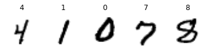
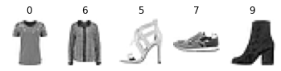

# Python ≥3.5 is required
import sys
assert sys.version_info >= (3, 5)
# Is this notebook running on Colab or Kaggle?
IS_COLAB = "google.colab" in sys.modules
IS_KAGGLE = "kaggle_secrets" in sys.modules
if IS_COLAB or IS_KAGGLE:
%pip install -q -U tfx
print("You can safely ignore the package incompatibility errors.")
# Scikit-Learn ≥0.20 is required
import sklearn
assert sklearn.__version__ >= "0.20"
# TensorFlow ≥2.0 is required
import tensorflow as tf
from tensorflow import keras
assert tf.__version__ >= "2.0"
# Common imports
import numpy as np
import os
# to make this notebook's output stable across runs
np.random.seed(42)
# To plot pretty figures
%matplotlib inline
import matplotlib as mpl
import matplotlib.pyplot as plt
mpl.rc('axes', labelsize=14)
mpl.rc('xtick', labelsize=12)
mpl.rc('ytick', labelsize=12)
# Where to save the figures
PROJECT_ROOT_DIR = "."
CHAPTER_ID = "data"
IMAGES_PATH = os.path.join(PROJECT_ROOT_DIR, "images", CHAPTER_ID)
os.makedirs(IMAGES_PATH, exist_ok=True)
def save_fig(fig_id, tight_layout=True, fig_extension="png", resolution=300):
path = os.path.join(IMAGES_PATH, fig_id + "." + fig_extension)
print("Saving figure", fig_id)
if tight_layout:
plt.tight_layout()
plt.savefig(path, format=fig_extension, dpi=resolution)Chapter 13 – Loading and Preprocessing Data with TensorFlow
This notebook contains all the sample code and solutions to the exercises in chapter 13.
Setup
First, let’s import a few common modules, ensure MatplotLib plots figures inline and prepare a function to save the figures. We also check that Python 3.5 or later is installed (although Python 2.x may work, it is deprecated so we strongly recommend you use Python 3 instead), as well as Scikit-Learn ≥0.20 and TensorFlow ≥2.0.
Datasets
X = tf.range(10)
dataset = tf.data.Dataset.from_tensor_slices(X)
dataset<TensorSliceDataset shapes: (), types: tf.int32>Equivalently:
dataset = tf.data.Dataset.range(10)for item in dataset:
print(item)tf.Tensor(0, shape=(), dtype=int64)
tf.Tensor(1, shape=(), dtype=int64)
tf.Tensor(2, shape=(), dtype=int64)
tf.Tensor(3, shape=(), dtype=int64)
tf.Tensor(4, shape=(), dtype=int64)
tf.Tensor(5, shape=(), dtype=int64)
tf.Tensor(6, shape=(), dtype=int64)
tf.Tensor(7, shape=(), dtype=int64)
tf.Tensor(8, shape=(), dtype=int64)
tf.Tensor(9, shape=(), dtype=int64)dataset = dataset.repeat(3).batch(7)
for item in dataset:
print(item)tf.Tensor([0 1 2 3 4 5 6], shape=(7,), dtype=int64)
tf.Tensor([7 8 9 0 1 2 3], shape=(7,), dtype=int64)
tf.Tensor([4 5 6 7 8 9 0], shape=(7,), dtype=int64)
tf.Tensor([1 2 3 4 5 6 7], shape=(7,), dtype=int64)
tf.Tensor([8 9], shape=(2,), dtype=int64)dataset = dataset.map(lambda x: x * 2)for item in dataset:
print(item)tf.Tensor([ 0 2 4 6 8 10 12], shape=(7,), dtype=int64)
tf.Tensor([14 16 18 0 2 4 6], shape=(7,), dtype=int64)
tf.Tensor([ 8 10 12 14 16 18 0], shape=(7,), dtype=int64)
tf.Tensor([ 2 4 6 8 10 12 14], shape=(7,), dtype=int64)
tf.Tensor([16 18], shape=(2,), dtype=int64)#dataset = dataset.apply(tf.data.experimental.unbatch()) # Now deprecated
dataset = dataset.unbatch()dataset = dataset.filter(lambda x: x < 10) # keep only items < 10for item in dataset.take(3):
print(item)tf.Tensor(0, shape=(), dtype=int64)
tf.Tensor(2, shape=(), dtype=int64)
tf.Tensor(4, shape=(), dtype=int64)tf.random.set_seed(42)
dataset = tf.data.Dataset.range(10).repeat(3)
dataset = dataset.shuffle(buffer_size=3, seed=42).batch(7)
for item in dataset:
print(item)tf.Tensor([1 3 0 4 2 5 6], shape=(7,), dtype=int64)
tf.Tensor([8 7 1 0 3 2 5], shape=(7,), dtype=int64)
tf.Tensor([4 6 9 8 9 7 0], shape=(7,), dtype=int64)
tf.Tensor([3 1 4 5 2 8 7], shape=(7,), dtype=int64)
tf.Tensor([6 9], shape=(2,), dtype=int64)Split the California dataset to multiple CSV files
Let’s start by loading and preparing the California housing dataset. We first load it, then split it into a training set, a validation set and a test set, and finally we scale it:
from sklearn.datasets import fetch_california_housing
from sklearn.model_selection import train_test_split
from sklearn.preprocessing import StandardScaler
housing = fetch_california_housing()
X_train_full, X_test, y_train_full, y_test = train_test_split(
housing.data, housing.target.reshape(-1, 1), random_state=42)
X_train, X_valid, y_train, y_valid = train_test_split(
X_train_full, y_train_full, random_state=42)
scaler = StandardScaler()
scaler.fit(X_train)
X_mean = scaler.mean_
X_std = scaler.scale_For a very large dataset that does not fit in memory, you will typically want to split it into many files first, then have TensorFlow read these files in parallel. To demonstrate this, let’s start by splitting the housing dataset and save it to 20 CSV files:
def save_to_multiple_csv_files(data, name_prefix, header=None, n_parts=10):
housing_dir = os.path.join("datasets", "housing")
os.makedirs(housing_dir, exist_ok=True)
path_format = os.path.join(housing_dir, "my_{}_{:02d}.csv")
filepaths = []
m = len(data)
for file_idx, row_indices in enumerate(np.array_split(np.arange(m), n_parts)):
part_csv = path_format.format(name_prefix, file_idx)
filepaths.append(part_csv)
with open(part_csv, "wt", encoding="utf-8") as f:
if header is not None:
f.write(header)
f.write("\n")
for row_idx in row_indices:
f.write(",".join([repr(col) for col in data[row_idx]]))
f.write("\n")
return filepathstrain_data = np.c_[X_train, y_train]
valid_data = np.c_[X_valid, y_valid]
test_data = np.c_[X_test, y_test]
header_cols = housing.feature_names + ["MedianHouseValue"]
header = ",".join(header_cols)
train_filepaths = save_to_multiple_csv_files(train_data, "train", header, n_parts=20)
valid_filepaths = save_to_multiple_csv_files(valid_data, "valid", header, n_parts=10)
test_filepaths = save_to_multiple_csv_files(test_data, "test", header, n_parts=10)Okay, now let’s take a peek at the first few lines of one of these CSV files:
import pandas as pd
pd.read_csv(train_filepaths[0]).head()| MedInc | HouseAge | AveRooms | AveBedrms | Population | AveOccup | Latitude | Longitude | MedianHouseValue | |
|---|---|---|---|---|---|---|---|---|---|
| 0 | 3.5214 | 15.0 | 3.049945 | 1.106548 | 1447.0 | 1.605993 | 37.63 | -122.43 | 1.442 |
| 1 | 5.3275 | 5.0 | 6.490060 | 0.991054 | 3464.0 | 3.443340 | 33.69 | -117.39 | 1.687 |
| 2 | 3.1000 | 29.0 | 7.542373 | 1.591525 | 1328.0 | 2.250847 | 38.44 | -122.98 | 1.621 |
| 3 | 7.1736 | 12.0 | 6.289003 | 0.997442 | 1054.0 | 2.695652 | 33.55 | -117.70 | 2.621 |
| 4 | 2.0549 | 13.0 | 5.312457 | 1.085092 | 3297.0 | 2.244384 | 33.93 | -116.93 | 0.956 |
Or in text mode:
with open(train_filepaths[0]) as f:
for i in range(5):
print(f.readline(), end="")MedInc,HouseAge,AveRooms,AveBedrms,Population,AveOccup,Latitude,Longitude,MedianHouseValue
3.5214,15.0,3.0499445061043287,1.106548279689234,1447.0,1.6059933407325193,37.63,-122.43,1.442
5.3275,5.0,6.490059642147117,0.9910536779324056,3464.0,3.4433399602385686,33.69,-117.39,1.687
3.1,29.0,7.5423728813559325,1.5915254237288134,1328.0,2.2508474576271187,38.44,-122.98,1.621
7.1736,12.0,6.289002557544757,0.9974424552429667,1054.0,2.6956521739130435,33.55,-117.7,2.621train_filepaths['datasets/housing/my_train_00.csv',
'datasets/housing/my_train_01.csv',
'datasets/housing/my_train_02.csv',
'datasets/housing/my_train_03.csv',
'datasets/housing/my_train_04.csv',
'datasets/housing/my_train_05.csv',
'datasets/housing/my_train_06.csv',
'datasets/housing/my_train_07.csv',
'datasets/housing/my_train_08.csv',
'datasets/housing/my_train_09.csv',
'datasets/housing/my_train_10.csv',
'datasets/housing/my_train_11.csv',
'datasets/housing/my_train_12.csv',
'datasets/housing/my_train_13.csv',
'datasets/housing/my_train_14.csv',
'datasets/housing/my_train_15.csv',
'datasets/housing/my_train_16.csv',
'datasets/housing/my_train_17.csv',
'datasets/housing/my_train_18.csv',
'datasets/housing/my_train_19.csv']Building an Input Pipeline
filepath_dataset = tf.data.Dataset.list_files(train_filepaths, seed=42)for filepath in filepath_dataset:
print(filepath)tf.Tensor(b'datasets/housing/my_train_15.csv', shape=(), dtype=string)
tf.Tensor(b'datasets/housing/my_train_08.csv', shape=(), dtype=string)
tf.Tensor(b'datasets/housing/my_train_03.csv', shape=(), dtype=string)
tf.Tensor(b'datasets/housing/my_train_01.csv', shape=(), dtype=string)
tf.Tensor(b'datasets/housing/my_train_10.csv', shape=(), dtype=string)
tf.Tensor(b'datasets/housing/my_train_05.csv', shape=(), dtype=string)
tf.Tensor(b'datasets/housing/my_train_19.csv', shape=(), dtype=string)
tf.Tensor(b'datasets/housing/my_train_16.csv', shape=(), dtype=string)
tf.Tensor(b'datasets/housing/my_train_02.csv', shape=(), dtype=string)
tf.Tensor(b'datasets/housing/my_train_09.csv', shape=(), dtype=string)
tf.Tensor(b'datasets/housing/my_train_00.csv', shape=(), dtype=string)
tf.Tensor(b'datasets/housing/my_train_07.csv', shape=(), dtype=string)
tf.Tensor(b'datasets/housing/my_train_12.csv', shape=(), dtype=string)
tf.Tensor(b'datasets/housing/my_train_04.csv', shape=(), dtype=string)
tf.Tensor(b'datasets/housing/my_train_17.csv', shape=(), dtype=string)
tf.Tensor(b'datasets/housing/my_train_11.csv', shape=(), dtype=string)
tf.Tensor(b'datasets/housing/my_train_14.csv', shape=(), dtype=string)
tf.Tensor(b'datasets/housing/my_train_18.csv', shape=(), dtype=string)
tf.Tensor(b'datasets/housing/my_train_06.csv', shape=(), dtype=string)
tf.Tensor(b'datasets/housing/my_train_13.csv', shape=(), dtype=string)n_readers = 5
dataset = filepath_dataset.interleave(
lambda filepath: tf.data.TextLineDataset(filepath).skip(1),
cycle_length=n_readers)for line in dataset.take(5):
print(line.numpy())b'4.6477,38.0,5.03728813559322,0.911864406779661,745.0,2.5254237288135593,32.64,-117.07,1.504'
b'8.72,44.0,6.163179916317992,1.0460251046025104,668.0,2.794979079497908,34.2,-118.18,4.159'
b'3.8456,35.0,5.461346633416459,0.9576059850374065,1154.0,2.8778054862842892,37.96,-122.05,1.598'
b'3.3456,37.0,4.514084507042254,0.9084507042253521,458.0,3.2253521126760565,36.67,-121.7,2.526'
b'3.6875,44.0,4.524475524475524,0.993006993006993,457.0,3.195804195804196,34.04,-118.15,1.625'Notice that field 4 is interpreted as a string.
record_defaults=[0, np.nan, tf.constant(np.nan, dtype=tf.float64), "Hello", tf.constant([])]
parsed_fields = tf.io.decode_csv('1,2,3,4,5', record_defaults)
parsed_fields[<tf.Tensor: shape=(), dtype=int32, numpy=1>,
<tf.Tensor: shape=(), dtype=float32, numpy=2.0>,
<tf.Tensor: shape=(), dtype=float64, numpy=3.0>,
<tf.Tensor: shape=(), dtype=string, numpy=b'4'>,
<tf.Tensor: shape=(), dtype=float32, numpy=5.0>]Notice that all missing fields are replaced with their default value, when provided:
parsed_fields = tf.io.decode_csv(',,,,5', record_defaults)
parsed_fields[<tf.Tensor: shape=(), dtype=int32, numpy=0>,
<tf.Tensor: shape=(), dtype=float32, numpy=nan>,
<tf.Tensor: shape=(), dtype=float64, numpy=nan>,
<tf.Tensor: shape=(), dtype=string, numpy=b'Hello'>,
<tf.Tensor: shape=(), dtype=float32, numpy=5.0>]The 5th field is compulsory (since we provided tf.constant([]) as the “default value”), so we get an exception if we do not provide it:
try:
parsed_fields = tf.io.decode_csv(',,,,', record_defaults)
except tf.errors.InvalidArgumentError as ex:
print(ex)Field 4 is required but missing in record 0! [Op:DecodeCSV]The number of fields should match exactly the number of fields in the record_defaults:
try:
parsed_fields = tf.io.decode_csv('1,2,3,4,5,6,7', record_defaults)
except tf.errors.InvalidArgumentError as ex:
print(ex)Expect 5 fields but have 7 in record 0 [Op:DecodeCSV]n_inputs = 8 # X_train.shape[-1]
@tf.function
def preprocess(line):
defs = [0.] * n_inputs + [tf.constant([], dtype=tf.float32)]
fields = tf.io.decode_csv(line, record_defaults=defs)
x = tf.stack(fields[:-1])
y = tf.stack(fields[-1:])
return (x - X_mean) / X_std, ypreprocess(b'4.2083,44.0,5.3232,0.9171,846.0,2.3370,37.47,-122.2,2.782')(<tf.Tensor: shape=(8,), dtype=float32, numpy=
array([ 0.16579157, 1.216324 , -0.05204565, -0.39215982, -0.5277444 ,
-0.2633488 , 0.8543046 , -1.3072058 ], dtype=float32)>,
<tf.Tensor: shape=(1,), dtype=float32, numpy=array([2.782], dtype=float32)>)def csv_reader_dataset(filepaths, repeat=1, n_readers=5,
n_read_threads=None, shuffle_buffer_size=10000,
n_parse_threads=5, batch_size=32):
dataset = tf.data.Dataset.list_files(filepaths).repeat(repeat)
dataset = dataset.interleave(
lambda filepath: tf.data.TextLineDataset(filepath).skip(1),
cycle_length=n_readers, num_parallel_calls=n_read_threads)
dataset = dataset.shuffle(shuffle_buffer_size)
dataset = dataset.map(preprocess, num_parallel_calls=n_parse_threads)
dataset = dataset.batch(batch_size)
return dataset.prefetch(1)tf.random.set_seed(42)
train_set = csv_reader_dataset(train_filepaths, batch_size=3)
for X_batch, y_batch in train_set.take(2):
print("X =", X_batch)
print("y =", y_batch)
print()X = tf.Tensor(
[[ 0.5804519 -0.20762321 0.05616303 -0.15191229 0.01343246 0.00604472
1.2525111 -1.3671792 ]
[ 5.818099 1.8491895 1.1784915 0.28173092 -1.2496178 -0.3571987
0.7231292 -1.0023477 ]
[-0.9253566 0.5834586 -0.7807257 -0.28213993 -0.36530012 0.27389365
-0.76194876 0.72684526]], shape=(3, 8), dtype=float32)
y = tf.Tensor(
[[1.752]
[1.313]
[1.535]], shape=(3, 1), dtype=float32)
X = tf.Tensor(
[[-0.8324941 0.6625668 -0.20741376 -0.18699841 -0.14536144 0.09635526
0.9807942 -0.67250353]
[-0.62183803 0.5834586 -0.19862501 -0.3500319 -1.1437552 -0.3363751
1.107282 -0.8674123 ]
[ 0.8683102 0.02970133 0.3427381 -0.29872298 0.7124906 0.28026953
-0.72915536 0.86178064]], shape=(3, 8), dtype=float32)
y = tf.Tensor(
[[0.919]
[1.028]
[2.182]], shape=(3, 1), dtype=float32)
train_set = csv_reader_dataset(train_filepaths, repeat=None)
valid_set = csv_reader_dataset(valid_filepaths)
test_set = csv_reader_dataset(test_filepaths)keras.backend.clear_session()
np.random.seed(42)
tf.random.set_seed(42)
model = keras.models.Sequential([
keras.layers.Dense(30, activation="relu", input_shape=X_train.shape[1:]),
keras.layers.Dense(1),
])model.compile(loss="mse", optimizer=keras.optimizers.SGD(learning_rate=1e-3))batch_size = 32
model.fit(train_set, steps_per_epoch=len(X_train) // batch_size, epochs=10,
validation_data=valid_set)Epoch 1/10
362/362 [==============================] - 1s 3ms/step - loss: 2.0914 - val_loss: 21.5124
Epoch 2/10
362/362 [==============================] - 0s 1ms/step - loss: 0.8428 - val_loss: 0.6648
Epoch 3/10
362/362 [==============================] - 0s 1ms/step - loss: 0.6329 - val_loss: 0.6196
Epoch 4/10
362/362 [==============================] - 0s 1ms/step - loss: 0.5922 - val_loss: 0.5669
Epoch 5/10
362/362 [==============================] - 0s 1ms/step - loss: 0.5622 - val_loss: 0.5402
Epoch 6/10
362/362 [==============================] - 0s 1ms/step - loss: 0.5698 - val_loss: 0.5209
Epoch 7/10
362/362 [==============================] - 0s 1ms/step - loss: 0.5195 - val_loss: 0.6130
Epoch 8/10
362/362 [==============================] - 0s 1ms/step - loss: 0.5155 - val_loss: 0.4818
Epoch 9/10
362/362 [==============================] - 0s 1ms/step - loss: 0.4965 - val_loss: 0.4904
Epoch 10/10
362/362 [==============================] - 0s 1ms/step - loss: 0.4925 - val_loss: 0.4585<tensorflow.python.keras.callbacks.History at 0x7fd68051ec50>model.evaluate(test_set, steps=len(X_test) // batch_size)161/161 [==============================] - 0s 589us/step - loss: 0.47880.4787752032279968new_set = test_set.map(lambda X, y: X) # we could instead just pass test_set, Keras would ignore the labels
X_new = X_test
model.predict(new_set, steps=len(X_new) // batch_size)array([[2.3576407],
[2.255291 ],
[1.4437605],
...,
[0.5654393],
[3.9442453],
[1.0232248]], dtype=float32)optimizer = keras.optimizers.Nadam(learning_rate=0.01)
loss_fn = keras.losses.mean_squared_error
n_epochs = 5
batch_size = 32
n_steps_per_epoch = len(X_train) // batch_size
total_steps = n_epochs * n_steps_per_epoch
global_step = 0
for X_batch, y_batch in train_set.take(total_steps):
global_step += 1
print("\rGlobal step {}/{}".format(global_step, total_steps), end="")
with tf.GradientTape() as tape:
y_pred = model(X_batch)
main_loss = tf.reduce_mean(loss_fn(y_batch, y_pred))
loss = tf.add_n([main_loss] + model.losses)
gradients = tape.gradient(loss, model.trainable_variables)
optimizer.apply_gradients(zip(gradients, model.trainable_variables))Global step 1810/1810keras.backend.clear_session()
np.random.seed(42)
tf.random.set_seed(42)optimizer = keras.optimizers.Nadam(learning_rate=0.01)
loss_fn = keras.losses.mean_squared_error
@tf.function
def train(model, n_epochs, batch_size=32,
n_readers=5, n_read_threads=5, shuffle_buffer_size=10000, n_parse_threads=5):
train_set = csv_reader_dataset(train_filepaths, repeat=n_epochs, n_readers=n_readers,
n_read_threads=n_read_threads, shuffle_buffer_size=shuffle_buffer_size,
n_parse_threads=n_parse_threads, batch_size=batch_size)
for X_batch, y_batch in train_set:
with tf.GradientTape() as tape:
y_pred = model(X_batch)
main_loss = tf.reduce_mean(loss_fn(y_batch, y_pred))
loss = tf.add_n([main_loss] + model.losses)
gradients = tape.gradient(loss, model.trainable_variables)
optimizer.apply_gradients(zip(gradients, model.trainable_variables))
train(model, 5)keras.backend.clear_session()
np.random.seed(42)
tf.random.set_seed(42)optimizer = keras.optimizers.Nadam(learning_rate=0.01)
loss_fn = keras.losses.mean_squared_error
@tf.function
def train(model, n_epochs, batch_size=32,
n_readers=5, n_read_threads=5, shuffle_buffer_size=10000, n_parse_threads=5):
train_set = csv_reader_dataset(train_filepaths, repeat=n_epochs, n_readers=n_readers,
n_read_threads=n_read_threads, shuffle_buffer_size=shuffle_buffer_size,
n_parse_threads=n_parse_threads, batch_size=batch_size)
n_steps_per_epoch = len(X_train) // batch_size
total_steps = n_epochs * n_steps_per_epoch
global_step = 0
for X_batch, y_batch in train_set.take(total_steps):
global_step += 1
if tf.equal(global_step % 100, 0):
tf.print("\rGlobal step", global_step, "/", total_steps)
with tf.GradientTape() as tape:
y_pred = model(X_batch)
main_loss = tf.reduce_mean(loss_fn(y_batch, y_pred))
loss = tf.add_n([main_loss] + model.losses)
gradients = tape.gradient(loss, model.trainable_variables)
optimizer.apply_gradients(zip(gradients, model.trainable_variables))
train(model, 5)Global step 100 / 1810
Global step 200 / 1810
Global step 300 / 1810
Global step 400 / 1810
Global step 500 / 1810
Global step 600 / 1810
Global step 700 / 1810
Global step 800 / 1810
Global step 900 / 1810
Global step 1000 / 1810
Global step 1100 / 1810
Global step 1200 / 1810
Global step 1300 / 1810
Global step 1400 / 1810
Global step 1500 / 1810
Global step 1600 / 1810
Global step 1700 / 1810
Global step 1800 / 1810Here is a short description of each method in the Dataset class:
for m in dir(tf.data.Dataset):
if not (m.startswith("_") or m.endswith("_")):
func = getattr(tf.data.Dataset, m)
if hasattr(func, "__doc__"):
print("● {:21s}{}".format(m + "()", func.__doc__.split("\n")[0]))● apply() Applies a transformation function to this dataset.
● as_numpy_iterator() Returns an iterator which converts all elements of the dataset to numpy.
● batch() Combines consecutive elements of this dataset into batches.
● cache() Caches the elements in this dataset.
● cardinality() Returns the cardinality of the dataset, if known.
● concatenate() Creates a `Dataset` by concatenating the given dataset with this dataset.
● element_spec() The type specification of an element of this dataset.
● enumerate() Enumerates the elements of this dataset.
● filter() Filters this dataset according to `predicate`.
● flat_map() Maps `map_func` across this dataset and flattens the result.
● from_generator() Creates a `Dataset` whose elements are generated by `generator`. (deprecated arguments)
● from_tensor_slices() Creates a `Dataset` whose elements are slices of the given tensors.
● from_tensors() Creates a `Dataset` with a single element, comprising the given tensors.
● interleave() Maps `map_func` across this dataset, and interleaves the results.
● list_files() A dataset of all files matching one or more glob patterns.
● map() Maps `map_func` across the elements of this dataset.
● options() Returns the options for this dataset and its inputs.
● padded_batch() Combines consecutive elements of this dataset into padded batches.
● prefetch() Creates a `Dataset` that prefetches elements from this dataset.
● range() Creates a `Dataset` of a step-separated range of values.
● reduce() Reduces the input dataset to a single element.
● repeat() Repeats this dataset so each original value is seen `count` times.
● shard() Creates a `Dataset` that includes only 1/`num_shards` of this dataset.
● shuffle() Randomly shuffles the elements of this dataset.
● skip() Creates a `Dataset` that skips `count` elements from this dataset.
● take() Creates a `Dataset` with at most `count` elements from this dataset.
● unbatch() Splits elements of a dataset into multiple elements.
● window() Combines (nests of) input elements into a dataset of (nests of) windows.
● with_options() Returns a new `tf.data.Dataset` with the given options set.
● zip() Creates a `Dataset` by zipping together the given datasets.The TFRecord binary format
A TFRecord file is just a list of binary records. You can create one using a tf.io.TFRecordWriter:
with tf.io.TFRecordWriter("my_data.tfrecord") as f:
f.write(b"This is the first record")
f.write(b"And this is the second record")And you can read it using a tf.data.TFRecordDataset:
filepaths = ["my_data.tfrecord"]
dataset = tf.data.TFRecordDataset(filepaths)
for item in dataset:
print(item)tf.Tensor(b'This is the first record', shape=(), dtype=string)
tf.Tensor(b'And this is the second record', shape=(), dtype=string)You can read multiple TFRecord files with just one TFRecordDataset. By default it will read them one at a time, but if you set num_parallel_reads=3, it will read 3 at a time in parallel and interleave their records:
filepaths = ["my_test_{}.tfrecord".format(i) for i in range(5)]
for i, filepath in enumerate(filepaths):
with tf.io.TFRecordWriter(filepath) as f:
for j in range(3):
f.write("File {} record {}".format(i, j).encode("utf-8"))
dataset = tf.data.TFRecordDataset(filepaths, num_parallel_reads=3)
for item in dataset:
print(item)tf.Tensor(b'File 0 record 0', shape=(), dtype=string)
tf.Tensor(b'File 1 record 0', shape=(), dtype=string)
tf.Tensor(b'File 2 record 0', shape=(), dtype=string)
tf.Tensor(b'File 0 record 1', shape=(), dtype=string)
tf.Tensor(b'File 1 record 1', shape=(), dtype=string)
tf.Tensor(b'File 2 record 1', shape=(), dtype=string)
tf.Tensor(b'File 0 record 2', shape=(), dtype=string)
tf.Tensor(b'File 1 record 2', shape=(), dtype=string)
tf.Tensor(b'File 2 record 2', shape=(), dtype=string)
tf.Tensor(b'File 3 record 0', shape=(), dtype=string)
tf.Tensor(b'File 4 record 0', shape=(), dtype=string)
tf.Tensor(b'File 3 record 1', shape=(), dtype=string)
tf.Tensor(b'File 4 record 1', shape=(), dtype=string)
tf.Tensor(b'File 3 record 2', shape=(), dtype=string)
tf.Tensor(b'File 4 record 2', shape=(), dtype=string)options = tf.io.TFRecordOptions(compression_type="GZIP")
with tf.io.TFRecordWriter("my_compressed.tfrecord", options) as f:
f.write(b"This is the first record")
f.write(b"And this is the second record")dataset = tf.data.TFRecordDataset(["my_compressed.tfrecord"],
compression_type="GZIP")
for item in dataset:
print(item)tf.Tensor(b'This is the first record', shape=(), dtype=string)
tf.Tensor(b'And this is the second record', shape=(), dtype=string)A Brief Intro to Protocol Buffers
For this section you need to install protobuf. In general you will not have to do so when using TensorFlow, as it comes with functions to create and parse protocol buffers of type tf.train.Example, which are generally sufficient. However, in this section we will learn about protocol buffers by creating our own simple protobuf definition, so we need the protobuf compiler (protoc): we will use it to compile the protobuf definition to a Python module that we can then use in our code.
First let’s write a simple protobuf definition:
%%writefile person.proto
syntax = "proto3";
message Person {
string name = 1;
int32 id = 2;
repeated string email = 3;
}Overwriting person.protoAnd let’s compile it (the --descriptor_set_out and --include_imports options are only required for the tf.io.decode_proto() example below):
!protoc person.proto --python_out=. --descriptor_set_out=person.desc --include_imports!ls person*person.desc person.proto person_pb2.pyfrom person_pb2 import Person
person = Person(name="Al", id=123, email=["a@b.com"]) # create a Person
print(person) # display the Personname: "Al"
id: 123
email: "a@b.com"
person.name # read a field'Al'person.name = "Alice" # modify a fieldperson.email[0] # repeated fields can be accessed like arrays'a@b.com'person.email.append("c@d.com") # add an email addresss = person.SerializeToString() # serialize to a byte string
sb'\n\x05Alice\x10{\x1a\x07a@b.com\x1a\x07c@d.com'person2 = Person() # create a new Person
person2.ParseFromString(s) # parse the byte string (27 bytes)27person == person2 # now they are equalTrueCustom protobuf
In rare cases, you may want to parse a custom protobuf (like the one we just created) in TensorFlow. For this you can use the tf.io.decode_proto() function:
person_tf = tf.io.decode_proto(
bytes=s,
message_type="Person",
field_names=["name", "id", "email"],
output_types=[tf.string, tf.int32, tf.string],
descriptor_source="person.desc")
person_tf.values[<tf.Tensor: shape=(1,), dtype=string, numpy=array([b'Alice'], dtype=object)>,
<tf.Tensor: shape=(1,), dtype=int32, numpy=array([123], dtype=int32)>,
<tf.Tensor: shape=(2,), dtype=string, numpy=array([b'a@b.com', b'c@d.com'], dtype=object)>]For more details, see the tf.io.decode_proto() documentation.
TensorFlow Protobufs
Here is the definition of the tf.train.Example protobuf:
syntax = "proto3";
message BytesList { repeated bytes value = 1; }
message FloatList { repeated float value = 1 [packed = true]; }
message Int64List { repeated int64 value = 1 [packed = true]; }
message Feature {
oneof kind {
BytesList bytes_list = 1;
FloatList float_list = 2;
Int64List int64_list = 3;
}
};
message Features { map<string, Feature> feature = 1; };
message Example { Features features = 1; };Warning: in TensorFlow 2.0 and 2.1, there was a bug preventing from tensorflow.train import X so we work around it by writing X = tf.train.X. See https://github.com/tensorflow/tensorflow/issues/33289 for more details.
#from tensorflow.train import BytesList, FloatList, Int64List
#from tensorflow.train import Feature, Features, Example
BytesList = tf.train.BytesList
FloatList = tf.train.FloatList
Int64List = tf.train.Int64List
Feature = tf.train.Feature
Features = tf.train.Features
Example = tf.train.Example
person_example = Example(
features=Features(
feature={
"name": Feature(bytes_list=BytesList(value=[b"Alice"])),
"id": Feature(int64_list=Int64List(value=[123])),
"emails": Feature(bytes_list=BytesList(value=[b"a@b.com", b"c@d.com"]))
}))
with tf.io.TFRecordWriter("my_contacts.tfrecord") as f:
f.write(person_example.SerializeToString())feature_description = {
"name": tf.io.FixedLenFeature([], tf.string, default_value=""),
"id": tf.io.FixedLenFeature([], tf.int64, default_value=0),
"emails": tf.io.VarLenFeature(tf.string),
}
for serialized_example in tf.data.TFRecordDataset(["my_contacts.tfrecord"]):
parsed_example = tf.io.parse_single_example(serialized_example,
feature_description)parsed_example{'emails': <tensorflow.python.framework.sparse_tensor.SparseTensor at 0x7fd640710890>,
'id': <tf.Tensor: shape=(), dtype=int64, numpy=123>,
'name': <tf.Tensor: shape=(), dtype=string, numpy=b'Alice'>}parsed_example{'emails': <tensorflow.python.framework.sparse_tensor.SparseTensor at 0x7fd640710890>,
'id': <tf.Tensor: shape=(), dtype=int64, numpy=123>,
'name': <tf.Tensor: shape=(), dtype=string, numpy=b'Alice'>}parsed_example["emails"].values[0]<tf.Tensor: shape=(), dtype=string, numpy=b'a@b.com'>tf.sparse.to_dense(parsed_example["emails"], default_value=b"")<tf.Tensor: shape=(2,), dtype=string, numpy=array([b'a@b.com', b'c@d.com'], dtype=object)>parsed_example["emails"].values<tf.Tensor: shape=(2,), dtype=string, numpy=array([b'a@b.com', b'c@d.com'], dtype=object)>Putting Images in TFRecords
from sklearn.datasets import load_sample_images
img = load_sample_images()["images"][0]
plt.imshow(img)
plt.axis("off")
plt.title("Original Image")
plt.show()data = tf.io.encode_jpeg(img)
example_with_image = Example(features=Features(feature={
"image": Feature(bytes_list=BytesList(value=[data.numpy()]))}))
serialized_example = example_with_image.SerializeToString()
# then save to TFRecordfeature_description = { "image": tf.io.VarLenFeature(tf.string) }
example_with_image = tf.io.parse_single_example(serialized_example, feature_description)
decoded_img = tf.io.decode_jpeg(example_with_image["image"].values[0])Or use decode_image() which supports BMP, GIF, JPEG and PNG formats:
decoded_img = tf.io.decode_image(example_with_image["image"].values[0])plt.imshow(decoded_img)
plt.title("Decoded Image")
plt.axis("off")
plt.show()Putting Tensors and Sparse Tensors in TFRecords
Tensors can be serialized and parsed easily using tf.io.serialize_tensor() and tf.io.parse_tensor():
t = tf.constant([[0., 1.], [2., 3.], [4., 5.]])
s = tf.io.serialize_tensor(t)
s<tf.Tensor: shape=(), dtype=string, numpy=b'\x08\x01\x12\x08\x12\x02\x08\x03\x12\x02\x08\x02"\x18\x00\x00\x00\x00\x00\x00\x80?\x00\x00\x00@\x00\x00@@\x00\x00\x80@\x00\x00\xa0@'>tf.io.parse_tensor(s, out_type=tf.float32)<tf.Tensor: shape=(3, 2), dtype=float32, numpy=
array([[0., 1.],
[2., 3.],
[4., 5.]], dtype=float32)>serialized_sparse = tf.io.serialize_sparse(parsed_example["emails"])
serialized_sparse<tf.Tensor: shape=(3,), dtype=string, numpy=
array([b'\x08\t\x12\x08\x12\x02\x08\x02\x12\x02\x08\x01"\x10\x00\x00\x00\x00\x00\x00\x00\x00\x01\x00\x00\x00\x00\x00\x00\x00',
b'\x08\x07\x12\x04\x12\x02\x08\x02"\x10\x07\x07a@b.comc@d.com',
b'\x08\t\x12\x04\x12\x02\x08\x01"\x08\x02\x00\x00\x00\x00\x00\x00\x00'],
dtype=object)>BytesList(value=serialized_sparse.numpy())value: "\010\t\022\010\022\002\010\002\022\002\010\001\"\020\000\000\000\000\000\000\000\000\001\000\000\000\000\000\000\000"
value: "\010\007\022\004\022\002\010\002\"\020\007\007a@b.comc@d.com"
value: "\010\t\022\004\022\002\010\001\"\010\002\000\000\000\000\000\000\000"dataset = tf.data.TFRecordDataset(["my_contacts.tfrecord"]).batch(10)
for serialized_examples in dataset:
parsed_examples = tf.io.parse_example(serialized_examples,
feature_description)parsed_examples{'image': <tensorflow.python.framework.sparse_tensor.SparseTensor at 0x7fd6406f5d50>}Handling Sequential Data Using SequenceExample
syntax = "proto3";
message FeatureList { repeated Feature feature = 1; };
message FeatureLists { map<string, FeatureList> feature_list = 1; };
message SequenceExample {
Features context = 1;
FeatureLists feature_lists = 2;
};Warning: in TensorFlow 2.0 and 2.1, there was a bug preventing from tensorflow.train import X so we work around it by writing X = tf.train.X. See https://github.com/tensorflow/tensorflow/issues/33289 for more details.
#from tensorflow.train import FeatureList, FeatureLists, SequenceExample
FeatureList = tf.train.FeatureList
FeatureLists = tf.train.FeatureLists
SequenceExample = tf.train.SequenceExample
context = Features(feature={
"author_id": Feature(int64_list=Int64List(value=[123])),
"title": Feature(bytes_list=BytesList(value=[b"A", b"desert", b"place", b"."])),
"pub_date": Feature(int64_list=Int64List(value=[1623, 12, 25]))
})
content = [["When", "shall", "we", "three", "meet", "again", "?"],
["In", "thunder", ",", "lightning", ",", "or", "in", "rain", "?"]]
comments = [["When", "the", "hurlyburly", "'s", "done", "."],
["When", "the", "battle", "'s", "lost", "and", "won", "."]]
def words_to_feature(words):
return Feature(bytes_list=BytesList(value=[word.encode("utf-8")
for word in words]))
content_features = [words_to_feature(sentence) for sentence in content]
comments_features = [words_to_feature(comment) for comment in comments]
sequence_example = SequenceExample(
context=context,
feature_lists=FeatureLists(feature_list={
"content": FeatureList(feature=content_features),
"comments": FeatureList(feature=comments_features)
}))sequence_examplecontext {
feature {
key: "author_id"
value {
int64_list {
value: 123
}
}
}
feature {
key: "pub_date"
value {
int64_list {
value: 1623
value: 12
value: 25
}
}
}
feature {
key: "title"
value {
bytes_list {
value: "A"
value: "desert"
value: "place"
value: "."
}
}
}
}
feature_lists {
feature_list {
key: "comments"
value {
feature {
bytes_list {
value: "When"
value: "the"
value: "hurlyburly"
value: "\'s"
value: "done"
value: "."
}
}
feature {
bytes_list {
value: "When"
value: "the"
value: "battle"
value: "\'s"
value: "lost"
value: "and"
value: "won"
value: "."
}
}
}
}
feature_list {
key: "content"
value {
feature {
bytes_list {
value: "When"
value: "shall"
value: "we"
value: "three"
value: "meet"
value: "again"
value: "?"
}
}
feature {
bytes_list {
value: "In"
value: "thunder"
value: ","
value: "lightning"
value: ","
value: "or"
value: "in"
value: "rain"
value: "?"
}
}
}
}
}serialized_sequence_example = sequence_example.SerializeToString()context_feature_descriptions = {
"author_id": tf.io.FixedLenFeature([], tf.int64, default_value=0),
"title": tf.io.VarLenFeature(tf.string),
"pub_date": tf.io.FixedLenFeature([3], tf.int64, default_value=[0, 0, 0]),
}
sequence_feature_descriptions = {
"content": tf.io.VarLenFeature(tf.string),
"comments": tf.io.VarLenFeature(tf.string),
}
parsed_context, parsed_feature_lists = tf.io.parse_single_sequence_example(
serialized_sequence_example, context_feature_descriptions,
sequence_feature_descriptions)parsed_context{'title': <tensorflow.python.framework.sparse_tensor.SparseTensor at 0x7fd621092610>,
'author_id': <tf.Tensor: shape=(), dtype=int64, numpy=123>,
'pub_date': <tf.Tensor: shape=(3,), dtype=int64, numpy=array([1623, 12, 25])>}parsed_context["title"].values<tf.Tensor: shape=(4,), dtype=string, numpy=array([b'A', b'desert', b'place', b'.'], dtype=object)>parsed_feature_lists{'comments': <tensorflow.python.framework.sparse_tensor.SparseTensor at 0x7fd621092790>,
'content': <tensorflow.python.framework.sparse_tensor.SparseTensor at 0x7fd621092b50>}print(tf.RaggedTensor.from_sparse(parsed_feature_lists["content"]))<tf.RaggedTensor [[b'When', b'shall', b'we', b'three', b'meet', b'again', b'?'], [b'In', b'thunder', b',', b'lightning', b',', b'or', b'in', b'rain', b'?']]>The Features API
Let’s use the variant of the California housing dataset that we used in Chapter 2, since it contains categorical features and missing values:
import os
import tarfile
import urllib.request
DOWNLOAD_ROOT = "https://raw.githubusercontent.com/ageron/handson-ml2/master/"
HOUSING_PATH = os.path.join("datasets", "housing")
HOUSING_URL = DOWNLOAD_ROOT + "datasets/housing/housing.tgz"
def fetch_housing_data(housing_url=HOUSING_URL, housing_path=HOUSING_PATH):
os.makedirs(housing_path, exist_ok=True)
tgz_path = os.path.join(housing_path, "housing.tgz")
urllib.request.urlretrieve(housing_url, tgz_path)
housing_tgz = tarfile.open(tgz_path)
housing_tgz.extractall(path=housing_path)
housing_tgz.close()fetch_housing_data()import pandas as pd
def load_housing_data(housing_path=HOUSING_PATH):
csv_path = os.path.join(housing_path, "housing.csv")
return pd.read_csv(csv_path)housing = load_housing_data()
housing.head()| longitude | latitude | housing_median_age | total_rooms | total_bedrooms | population | households | median_income | median_house_value | ocean_proximity | |
|---|---|---|---|---|---|---|---|---|---|---|
| 0 | -122.23 | 37.88 | 41.0 | 880.0 | 129.0 | 322.0 | 126.0 | 8.3252 | 452600.0 | NEAR BAY |
| 1 | -122.22 | 37.86 | 21.0 | 7099.0 | 1106.0 | 2401.0 | 1138.0 | 8.3014 | 358500.0 | NEAR BAY |
| 2 | -122.24 | 37.85 | 52.0 | 1467.0 | 190.0 | 496.0 | 177.0 | 7.2574 | 352100.0 | NEAR BAY |
| 3 | -122.25 | 37.85 | 52.0 | 1274.0 | 235.0 | 558.0 | 219.0 | 5.6431 | 341300.0 | NEAR BAY |
| 4 | -122.25 | 37.85 | 52.0 | 1627.0 | 280.0 | 565.0 | 259.0 | 3.8462 | 342200.0 | NEAR BAY |
housing_median_age = tf.feature_column.numeric_column("housing_median_age")age_mean, age_std = X_mean[1], X_std[1] # The median age is column in 1
housing_median_age = tf.feature_column.numeric_column(
"housing_median_age", normalizer_fn=lambda x: (x - age_mean) / age_std)median_income = tf.feature_column.numeric_column("median_income")
bucketized_income = tf.feature_column.bucketized_column(
median_income, boundaries=[1.5, 3., 4.5, 6.])bucketized_incomeBucketizedColumn(source_column=NumericColumn(key='median_income', shape=(1,), default_value=None, dtype=tf.float32, normalizer_fn=None), boundaries=(1.5, 3.0, 4.5, 6.0))ocean_prox_vocab = ['<1H OCEAN', 'INLAND', 'ISLAND', 'NEAR BAY', 'NEAR OCEAN']
ocean_proximity = tf.feature_column.categorical_column_with_vocabulary_list(
"ocean_proximity", ocean_prox_vocab)ocean_proximityVocabularyListCategoricalColumn(key='ocean_proximity', vocabulary_list=('<1H OCEAN', 'INLAND', 'ISLAND', 'NEAR BAY', 'NEAR OCEAN'), dtype=tf.string, default_value=-1, num_oov_buckets=0)# Just an example, it's not used later on
city_hash = tf.feature_column.categorical_column_with_hash_bucket(
"city", hash_bucket_size=1000)
city_hashHashedCategoricalColumn(key='city', hash_bucket_size=1000, dtype=tf.string)bucketized_age = tf.feature_column.bucketized_column(
housing_median_age, boundaries=[-1., -0.5, 0., 0.5, 1.]) # age was scaled
age_and_ocean_proximity = tf.feature_column.crossed_column(
[bucketized_age, ocean_proximity], hash_bucket_size=100)latitude = tf.feature_column.numeric_column("latitude")
longitude = tf.feature_column.numeric_column("longitude")
bucketized_latitude = tf.feature_column.bucketized_column(
latitude, boundaries=list(np.linspace(32., 42., 20 - 1)))
bucketized_longitude = tf.feature_column.bucketized_column(
longitude, boundaries=list(np.linspace(-125., -114., 20 - 1)))
location = tf.feature_column.crossed_column(
[bucketized_latitude, bucketized_longitude], hash_bucket_size=1000)ocean_proximity_one_hot = tf.feature_column.indicator_column(ocean_proximity)ocean_proximity_embed = tf.feature_column.embedding_column(ocean_proximity,
dimension=2)Using Feature Columns for Parsing
median_house_value = tf.feature_column.numeric_column("median_house_value")columns = [housing_median_age, median_house_value]
feature_descriptions = tf.feature_column.make_parse_example_spec(columns)
feature_descriptions{'housing_median_age': FixedLenFeature(shape=(1,), dtype=tf.float32, default_value=None),
'median_house_value': FixedLenFeature(shape=(1,), dtype=tf.float32, default_value=None)}with tf.io.TFRecordWriter("my_data_with_features.tfrecords") as f:
for x, y in zip(X_train[:, 1:2], y_train):
example = Example(features=Features(feature={
"housing_median_age": Feature(float_list=FloatList(value=[x])),
"median_house_value": Feature(float_list=FloatList(value=[y]))
}))
f.write(example.SerializeToString())keras.backend.clear_session()
np.random.seed(42)
tf.random.set_seed(42)def parse_examples(serialized_examples):
examples = tf.io.parse_example(serialized_examples, feature_descriptions)
targets = examples.pop("median_house_value") # separate the targets
return examples, targets
batch_size = 32
dataset = tf.data.TFRecordDataset(["my_data_with_features.tfrecords"])
dataset = dataset.repeat().shuffle(10000).batch(batch_size).map(parse_examples)Warning: the DenseFeatures layer currently does not work with the Functional API, see TF issue #27416. Hopefully this will be resolved before the final release of TF 2.0.
columns_without_target = columns[:-1]
model = keras.models.Sequential([
keras.layers.DenseFeatures(feature_columns=columns_without_target),
keras.layers.Dense(1)
])
model.compile(loss="mse",
optimizer=keras.optimizers.SGD(learning_rate=1e-3),
metrics=["accuracy"])
model.fit(dataset, steps_per_epoch=len(X_train) // batch_size, epochs=5)Epoch 1/5
WARNING:tensorflow:Layers in a Sequential model should only have a single input tensor, but we receive a <class 'dict'> input: {'housing_median_age': <tf.Tensor 'IteratorGetNext:0' shape=(None, 1) dtype=float32>}
Consider rewriting this model with the Functional API.
WARNING:tensorflow:Layers in a Sequential model should only have a single input tensor, but we receive a <class 'dict'> input: {'housing_median_age': <tf.Tensor 'IteratorGetNext:0' shape=(None, 1) dtype=float32>}
Consider rewriting this model with the Functional API.
362/362 [==============================] - 0s 675us/step - loss: 4.7553 - accuracy: 8.8428e-04
Epoch 2/5
362/362 [==============================] - 0s 622us/step - loss: 2.1622 - accuracy: 0.0021
Epoch 3/5
362/362 [==============================] - 0s 583us/step - loss: 1.4673 - accuracy: 0.0032
Epoch 4/5
362/362 [==============================] - 0s 543us/step - loss: 1.3786 - accuracy: 0.0033
Epoch 5/5
362/362 [==============================] - 0s 537us/step - loss: 1.3404 - accuracy: 0.0034<tensorflow.python.keras.callbacks.History at 0x7fd532a6ffd0>some_columns = [ocean_proximity_embed, bucketized_income]
dense_features = keras.layers.DenseFeatures(some_columns)
dense_features({
"ocean_proximity": [["NEAR OCEAN"], ["INLAND"], ["INLAND"]],
"median_income": [[3.], [7.2], [1.]]
})<tf.Tensor: shape=(3, 7), dtype=float32, numpy=
array([[ 0. , 0. , 1. , 0. , 0. ,
-0.14504611, 0.7563394 ],
[ 0. , 0. , 0. , 0. , 1. ,
-1.1119912 , 0.56957847],
[ 1. , 0. , 0. , 0. , 0. ,
-1.1119912 , 0.56957847]], dtype=float32)>TF Transform
try:
import tensorflow_transform as tft
def preprocess(inputs): # inputs is a batch of input features
median_age = inputs["housing_median_age"]
ocean_proximity = inputs["ocean_proximity"]
standardized_age = tft.scale_to_z_score(median_age - tft.mean(median_age))
ocean_proximity_id = tft.compute_and_apply_vocabulary(ocean_proximity)
return {
"standardized_median_age": standardized_age,
"ocean_proximity_id": ocean_proximity_id
}
except ImportError:
print("TF Transform is not installed. Try running: pip3 install -U tensorflow-transform")TensorFlow Datasets
import tensorflow_datasets as tfds
datasets = tfds.load(name="mnist")
mnist_train, mnist_test = datasets["train"], datasets["test"]Downloading and preparing dataset mnist/3.0.1 (download: 11.06 MiB, generated: 21.00 MiB, total: 32.06 MiB) to /Users/ageron/tensorflow_datasets/mnist/3.0.1...
Dataset mnist downloaded and prepared to /Users/ageron/tensorflow_datasets/mnist/3.0.1. Subsequent calls will reuse this data.print(tfds.list_builders())['abstract_reasoning', 'aeslc', 'aflw2k3d', 'amazon_us_reviews', 'arc', 'bair_robot_pushing_small', 'beans', 'big_patent', 'bigearthnet', 'billsum', 'binarized_mnist', 'binary_alpha_digits', 'blimp', 'c4', 'caltech101', 'caltech_birds2010', 'caltech_birds2011', 'cars196', 'cassava', 'cats_vs_dogs', 'celeb_a', 'celeb_a_hq', 'cfq', 'chexpert', 'cifar10', 'cifar100', 'cifar10_1', 'cifar10_corrupted', 'citrus_leaves', 'cityscapes', 'civil_comments', 'clevr', 'cmaterdb', 'cnn_dailymail', 'coco', 'coil100', 'colorectal_histology', 'colorectal_histology_large', 'common_voice', 'cos_e', 'crema_d', 'curated_breast_imaging_ddsm', 'cycle_gan', 'deep_weeds', 'definite_pronoun_resolution', 'dementiabank', 'diabetic_retinopathy_detection', 'div2k', 'dmlab', 'downsampled_imagenet', 'dsprites', 'dtd', 'duke_ultrasound', 'emnist', 'eraser_multi_rc', 'esnli', 'eurosat', 'fashion_mnist', 'flic', 'flores', 'food101', 'forest_fires', 'gap', 'geirhos_conflict_stimuli', 'german_credit_numeric', 'gigaword', 'glue', 'groove', 'higgs', 'horses_or_humans', 'i_naturalist2017', 'image_label_folder', 'imagenet2012', 'imagenet2012_corrupted', 'imagenet2012_subset', 'imagenet_resized', 'imagenette', 'imagewang', 'imdb_reviews', 'iris', 'kitti', 'kmnist', 'lfw', 'librispeech', 'librispeech_lm', 'libritts', 'ljspeech', 'lm1b', 'lost_and_found', 'lsun', 'malaria', 'math_dataset', 'mnist', 'mnist_corrupted', 'movie_rationales', 'moving_mnist', 'multi_news', 'multi_nli', 'multi_nli_mismatch', 'natural_questions', 'newsroom', 'nsynth', 'omniglot', 'open_images_challenge2019_detection', 'open_images_v4', 'opinosis', 'oxford_flowers102', 'oxford_iiit_pet', 'para_crawl', 'patch_camelyon', 'pet_finder', 'places365_small', 'plant_leaves', 'plant_village', 'plantae_k', 'qa4mre', 'quickdraw_bitmap', 'reddit', 'reddit_tifu', 'resisc45', 'robonet', 'rock_paper_scissors', 'rock_you', 'savee', 'scan', 'scene_parse150', 'scicite', 'scientific_papers', 'shapes3d', 'smallnorb', 'snli', 'so2sat', 'speech_commands', 'squad', 'stanford_dogs', 'stanford_online_products', 'starcraft_video', 'stl10', 'sun397', 'super_glue', 'svhn_cropped', 'ted_hrlr_translate', 'ted_multi_translate', 'tedlium', 'tf_flowers', 'the300w_lp', 'tiny_shakespeare', 'titanic', 'trivia_qa', 'uc_merced', 'ucf101', 'vgg_face2', 'visual_domain_decathlon', 'voc', 'voxceleb', 'waymo_open_dataset', 'web_questions', 'wider_face', 'wiki40b', 'wikihow', 'wikipedia', 'wmt14_translate', 'wmt15_translate', 'wmt16_translate', 'wmt17_translate', 'wmt18_translate', 'wmt19_translate', 'wmt_t2t_translate', 'wmt_translate', 'xnli', 'xsum', 'yelp_polarity_reviews']plt.figure(figsize=(6,3))
mnist_train = mnist_train.repeat(5).batch(32).prefetch(1)
for item in mnist_train:
images = item["image"]
labels = item["label"]
for index in range(5):
plt.subplot(1, 5, index + 1)
image = images[index, ..., 0]
label = labels[index].numpy()
plt.imshow(image, cmap="binary")
plt.title(label)
plt.axis("off")
break # just showing part of the first batch
datasets = tfds.load(name="mnist")
mnist_train, mnist_test = datasets["train"], datasets["test"]
mnist_train = mnist_train.repeat(5).batch(32)
mnist_train = mnist_train.map(lambda items: (items["image"], items["label"]))
mnist_train = mnist_train.prefetch(1)
for images, labels in mnist_train.take(1):
print(images.shape)
print(labels.numpy())(32, 28, 28, 1)
[4 1 0 7 8 1 2 7 1 6 6 4 7 7 3 3 7 9 9 1 0 6 6 9 9 4 8 9 4 7 3 3]keras.backend.clear_session()
np.random.seed(42)
tf.random.set_seed(42)datasets = tfds.load(name="mnist", batch_size=32, as_supervised=True)
mnist_train = datasets["train"].repeat().prefetch(1)
model = keras.models.Sequential([
keras.layers.Flatten(input_shape=[28, 28, 1]),
keras.layers.Lambda(lambda images: tf.cast(images, tf.float32)),
keras.layers.Dense(10, activation="softmax")])
model.compile(loss="sparse_categorical_crossentropy",
optimizer=keras.optimizers.SGD(learning_rate=1e-3),
metrics=["accuracy"])
model.fit(mnist_train, steps_per_epoch=60000 // 32, epochs=5)Epoch 1/5
1875/1875 [==============================] - 2s 997us/step - loss: 42.8499 - accuracy: 0.8034
Epoch 2/5
1875/1875 [==============================] - 1s 481us/step - loss: 25.1669 - accuracy: 0.8687
Epoch 3/5
1875/1875 [==============================] - 1s 460us/step - loss: 24.1730 - accuracy: 0.8744
Epoch 4/5
1875/1875 [==============================] - 1s 446us/step - loss: 23.7216 - accuracy: 0.8760
Epoch 5/5
1875/1875 [==============================] - 1s 444us/step - loss: 23.1382 - accuracy: 0.8786<tensorflow.python.keras.callbacks.History at 0x7fd515158c90>TensorFlow Hub
keras.backend.clear_session()
np.random.seed(42)
tf.random.set_seed(42)import tensorflow_hub as hub
hub_layer = hub.KerasLayer("https://tfhub.dev/google/nnlm-en-dim50/2",
output_shape=[50], input_shape=[], dtype=tf.string)
model = keras.Sequential()
model.add(hub_layer)
model.add(keras.layers.Dense(16, activation='relu'))
model.add(keras.layers.Dense(1, activation='sigmoid'))
model.summary()Model: "sequential"
_________________________________________________________________
Layer (type) Output Shape Param #
=================================================================
keras_layer (KerasLayer) (None, 50) 48190600
_________________________________________________________________
dense (Dense) (None, 16) 816
_________________________________________________________________
dense_1 (Dense) (None, 1) 17
=================================================================
Total params: 48,191,433
Trainable params: 833
Non-trainable params: 48,190,600
_________________________________________________________________sentences = tf.constant(["It was a great movie", "The actors were amazing"])
embeddings = hub_layer(sentences)embeddings<tf.Tensor: shape=(2, 50), dtype=float32, numpy=
array([[ 7.45939985e-02, 2.76720114e-02, 9.38646123e-02,
1.25124469e-01, 5.40293928e-04, -1.09435350e-01,
1.34755149e-01, -9.57818255e-02, -1.85177118e-01,
-1.69703495e-02, 1.75612606e-02, -9.06603858e-02,
1.12110220e-01, 1.04646273e-01, 3.87700424e-02,
-7.71859884e-02, -3.12189370e-01, 6.99466765e-02,
-4.88970093e-02, -2.99049795e-01, 1.31183028e-01,
-2.12630898e-01, 6.96169436e-02, 1.63592950e-01,
1.05169769e-02, 7.79720694e-02, -2.55230188e-01,
-1.80790052e-01, 2.93739915e-01, 1.62875261e-02,
-2.80566931e-01, 1.60284728e-01, 9.87277832e-03,
8.44555616e-04, 8.39456245e-02, 3.24002892e-01,
1.53253034e-01, -3.01048346e-02, 8.94618109e-02,
-2.39153411e-02, -1.50188789e-01, -1.81733668e-02,
-1.20483577e-01, 1.32937476e-01, -3.35325629e-01,
-1.46504581e-01, -1.25251599e-02, -1.64428815e-01,
-7.00765476e-02, 3.60923223e-02],
[-1.56998575e-01, 4.24599349e-02, -5.57703003e-02,
-8.08446854e-03, 1.23733155e-01, 3.89427543e-02,
-4.37901802e-02, -1.86987907e-01, -2.29341656e-01,
-1.27766818e-01, 3.83025259e-02, -1.07057482e-01,
-6.11584112e-02, 2.49654502e-01, -1.39712945e-01,
-3.91289443e-02, -1.35873526e-01, -3.58613044e-01,
2.53462754e-02, -1.58370987e-01, -1.38350084e-01,
-3.90771806e-01, -6.63642734e-02, -3.24838236e-02,
-2.20453963e-02, -1.68282315e-01, -7.40613639e-02,
-2.49074101e-02, 2.46460736e-01, 9.87201929e-05,
-1.85390845e-01, -4.92824614e-02, 1.09015472e-01,
-9.54203904e-02, -1.60352528e-01, -2.59811729e-02,
1.13778859e-01, -2.09578887e-01, 2.18261331e-01,
-3.11211571e-02, -6.12562597e-02, -8.66057724e-02,
-1.10762455e-01, -5.73977083e-03, -1.08923554e-01,
-1.72919363e-01, 1.00515485e-01, -5.64153939e-02,
-4.97694984e-02, -1.07776590e-01]], dtype=float32)>Exercises
1. to 8.
See Appendix A
9.
a.
Exercise: Load the Fashion MNIST dataset (introduced in Chapter 10); split it into a training set, a validation set, and a test set; shuffle the training set; and save each dataset to multiple TFRecord files. Each record should be a serialized Example protobuf with two features: the serialized image (use tf.io.serialize_tensor() to serialize each image), and the label. Note: for large images, you could use tf.io.encode_jpeg() instead. This would save a lot of space, but it would lose a bit of image quality.
(X_train_full, y_train_full), (X_test, y_test) = keras.datasets.fashion_mnist.load_data()
X_valid, X_train = X_train_full[:5000], X_train_full[5000:]
y_valid, y_train = y_train_full[:5000], y_train_full[5000:]keras.backend.clear_session()
np.random.seed(42)
tf.random.set_seed(42)train_set = tf.data.Dataset.from_tensor_slices((X_train, y_train)).shuffle(len(X_train))
valid_set = tf.data.Dataset.from_tensor_slices((X_valid, y_valid))
test_set = tf.data.Dataset.from_tensor_slices((X_test, y_test))def create_example(image, label):
image_data = tf.io.serialize_tensor(image)
#image_data = tf.io.encode_jpeg(image[..., np.newaxis])
return Example(
features=Features(
feature={
"image": Feature(bytes_list=BytesList(value=[image_data.numpy()])),
"label": Feature(int64_list=Int64List(value=[label])),
}))for image, label in valid_set.take(1):
print(create_example(image, label))features {
feature {
key: "image"
value {
bytes_list {
value: "\010\004\022\010\022\002\010\034\022\002\010\034\"\220\006\000\000\000\000\000\000\000\000\000\000\000\000\000\000\000\000\000\000\000\000\000\000\000\000\000\000\000\000\000\000\000\000\000\000\000\000\000\000\000\000\000\000\000\000\000\000\000\000\000\000\000\000\000\000\000\000\000\000\000\000\000\000\000\000\000\000\000\000\000\000\000\000\000\000\000\000\000\000\000\000\000\000\000\000\000\000\000\000\000\000\000\000\000\000\000\000\001\000\000\rI\000\000\001\004\000\000\000\000\001\001\000\000\000\000\000\000\000\000\000\000\000\000\000\003\000$\210\177>6\000\000\000\001\003\004\000\000\003\000\000\000\000\000\000\000\000\000\000\000\000\006\000f\314\260\206\220{\027\000\000\000\000\014\n\000\000\000\000\000\000\000\000\000\000\000\000\000\000\000\233\354\317\262k\234\241m@\027M\202H\017\000\000\000\000\000\000\000\000\000\000\000\001\000E\317\337\332\330\330\243\177yz\222\215X\254B\000\000\000\000\000\000\000\000\000\001\001\001\000\310\350\350\351\345\337\337\327\325\244\177{\304\345\000\000\000\000\000\000\000\000\000\000\000\000\000\000\267\341\330\337\344\353\343\340\336\340\335\337\365\255\000\000\000\000\000\000\000\000\000\000\000\000\000\000\301\344\332\325\306\264\324\322\323\325\337\334\363\312\000\000\000\000\000\000\000\000\000\000\001\003\000\014\333\334\324\332\300\251\343\320\332\340\324\342\305\3214\000\000\000\000\000\000\000\000\000\000\006\000c\364\336\334\332\313\306\335\327\325\336\334\365w\2478\000\000\000\000\000\000\000\000\000\004\000\0007\354\344\346\344\360\350\325\332\337\352\331\331\321\\\000\000\000\001\004\006\007\002\000\000\000\000\000\355\342\331\337\336\333\336\335\330\337\345\327\332\377M\000\000\003\000\000\000\000\000\000\000>\221\314\344\317\325\335\332\320\323\332\340\337\333\327\340\364\237\000\000\000\000\000\022,Rk\275\344\334\336\331\342\310\315\323\346\340\352\260\274\372\370\351\356\327\000\0009\273\320\340\335\340\320\314\326\320\321\310\237\365\301\316\337\377\377\335\352\335\323\334\350\366\000\003\312\344\340\335\323\323\326\315\315\315\334\360P\226\377\345\335\274\232\277\322\314\321\336\344\341\000b\351\306\322\336\345\345\352\371\334\302\327\331\361AIju\250\333\335\327\331\337\337\340\345\035K\314\324\314\301\315\323\341\330\271\305\316\306\325\360\303\343\365\357\337\332\324\321\336\334\335\346C0\313\267\302\325\305\271\276\302\300\312\326\333\335\334\354\341\330\307\316\272\265\261\254\265\315\316s\000z\333\301\263\253\267\304\314\322\325\317\323\322\310\304\302\277\303\277\306\300\260\234\247\261\322\\\000\000J\275\324\277\257\254\257\265\271\274\275\274\301\306\314\321\322\322\323\274\274\302\300\330\252\000\002\000\000\000B\310\336\355\357\362\366\363\364\335\334\301\277\263\266\266\265\260\246\250c:\000\000\000\000\000\000\000\000\000(=,H)#\000\000\000\000\000\000\000\000\000\000\000\000\000\000\000\000\000\000\000\000\000\000\000\000\000\000\000\000\000\000\000\000\000\000\000\000\000\000\000\000\000\000\000\000\000\000\000\000\000\000\000\000\000\000\000\000\000\000\000\000\000\000\000\000\000\000\000\000\000\000\000"
}
}
}
feature {
key: "label"
value {
int64_list {
value: 9
}
}
}
}
The following function saves a given dataset to a set of TFRecord files. The examples are written to the files in a round-robin fashion. To do this, we enumerate all the examples using the dataset.enumerate() method, and we compute index % n_shards to decide which file to write to. We use the standard contextlib.ExitStack class to make sure that all writers are properly closed whether or not an I/O error occurs while writing.
from contextlib import ExitStack
def write_tfrecords(name, dataset, n_shards=10):
paths = ["{}.tfrecord-{:05d}-of-{:05d}".format(name, index, n_shards)
for index in range(n_shards)]
with ExitStack() as stack:
writers = [stack.enter_context(tf.io.TFRecordWriter(path))
for path in paths]
for index, (image, label) in dataset.enumerate():
shard = index % n_shards
example = create_example(image, label)
writers[shard].write(example.SerializeToString())
return pathstrain_filepaths = write_tfrecords("my_fashion_mnist.train", train_set)
valid_filepaths = write_tfrecords("my_fashion_mnist.valid", valid_set)
test_filepaths = write_tfrecords("my_fashion_mnist.test", test_set)b.
Exercise: Then use tf.data to create an efficient dataset for each set. Finally, use a Keras model to train these datasets, including a preprocessing layer to standardize each input feature. Try to make the input pipeline as efficient as possible, using TensorBoard to visualize profiling data.
def preprocess(tfrecord):
feature_descriptions = {
"image": tf.io.FixedLenFeature([], tf.string, default_value=""),
"label": tf.io.FixedLenFeature([], tf.int64, default_value=-1)
}
example = tf.io.parse_single_example(tfrecord, feature_descriptions)
image = tf.io.parse_tensor(example["image"], out_type=tf.uint8)
#image = tf.io.decode_jpeg(example["image"])
image = tf.reshape(image, shape=[28, 28])
return image, example["label"]
def mnist_dataset(filepaths, n_read_threads=5, shuffle_buffer_size=None,
n_parse_threads=5, batch_size=32, cache=True):
dataset = tf.data.TFRecordDataset(filepaths,
num_parallel_reads=n_read_threads)
if cache:
dataset = dataset.cache()
if shuffle_buffer_size:
dataset = dataset.shuffle(shuffle_buffer_size)
dataset = dataset.map(preprocess, num_parallel_calls=n_parse_threads)
dataset = dataset.batch(batch_size)
return dataset.prefetch(1)train_set = mnist_dataset(train_filepaths, shuffle_buffer_size=60000)
valid_set = mnist_dataset(valid_filepaths)
test_set = mnist_dataset(test_filepaths)for X, y in train_set.take(1):
for i in range(5):
plt.subplot(1, 5, i + 1)
plt.imshow(X[i].numpy(), cmap="binary")
plt.axis("off")
plt.title(str(y[i].numpy()))
keras.backend.clear_session()
tf.random.set_seed(42)
np.random.seed(42)
class Standardization(keras.layers.Layer):
def adapt(self, data_sample):
self.means_ = np.mean(data_sample, axis=0, keepdims=True)
self.stds_ = np.std(data_sample, axis=0, keepdims=True)
def call(self, inputs):
return (inputs - self.means_) / (self.stds_ + keras.backend.epsilon())
standardization = Standardization(input_shape=[28, 28])
# or perhaps soon:
#standardization = keras.layers.Normalization()
sample_image_batches = train_set.take(100).map(lambda image, label: image)
sample_images = np.concatenate(list(sample_image_batches.as_numpy_iterator()),
axis=0).astype(np.float32)
standardization.adapt(sample_images)
model = keras.models.Sequential([
standardization,
keras.layers.Flatten(),
keras.layers.Dense(100, activation="relu"),
keras.layers.Dense(10, activation="softmax")
])
model.compile(loss="sparse_categorical_crossentropy",
optimizer="nadam", metrics=["accuracy"])from datetime import datetime
logs = os.path.join(os.curdir, "my_logs",
"run_" + datetime.now().strftime("%Y%m%d_%H%M%S"))
tensorboard_cb = tf.keras.callbacks.TensorBoard(
log_dir=logs, histogram_freq=1, profile_batch=10)
model.fit(train_set, epochs=5, validation_data=valid_set,
callbacks=[tensorboard_cb])Epoch 1/5
1719/1719 [==============================] - 4s 2ms/step - loss: 656.6687 - accuracy: 0.8038 - val_loss: 82.8087 - val_accuracy: 0.8806
Epoch 2/5
1719/1719 [==============================] - 4s 2ms/step - loss: 209.0040 - accuracy: 0.8781 - val_loss: 147.8434 - val_accuracy: 0.8906
Epoch 3/5
1719/1719 [==============================] - 3s 2ms/step - loss: 146.5866 - accuracy: 0.8914 - val_loss: 361.5933 - val_accuracy: 0.9058
Epoch 4/5
1719/1719 [==============================] - 3s 2ms/step - loss: 110.8240 - accuracy: 0.9014 - val_loss: 150.4520 - val_accuracy: 0.9143
Epoch 5/5
1719/1719 [==============================] - 3s 2ms/step - loss: 175.6303 - accuracy: 0.9106 - val_loss: 42.5092 - val_accuracy: 0.9141<tensorflow.python.keras.callbacks.History at 0x7fd521498890>Warning: The profiling tab in TensorBoard works if you use TensorFlow 2.2+. You also need to make sure tensorboard_plugin_profile is installed (and restart Jupyter if necessary).
%load_ext tensorboard
%tensorboard --logdir=./my_logs --port=600610.
Exercise: In this exercise you will download a dataset, split it, create a tf.data.Dataset to load it and preprocess it efficiently, then build and train a binary classification model containing an Embedding layer.
a.
Exercise: Download the Large Movie Review Dataset, which contains 50,000 movies reviews from the Internet Movie Database. The data is organized in two directories, train and test, each containing a pos subdirectory with 12,500 positive reviews and a neg subdirectory with 12,500 negative reviews. Each review is stored in a separate text file. There are other files and folders (including preprocessed bag-of-words), but we will ignore them in this exercise.
from pathlib import Path
DOWNLOAD_ROOT = "http://ai.stanford.edu/~amaas/data/sentiment/"
FILENAME = "aclImdb_v1.tar.gz"
filepath = keras.utils.get_file(FILENAME, DOWNLOAD_ROOT + FILENAME, extract=True)
path = Path(filepath).parent / "aclImdb"
pathDownloading data from http://ai.stanford.edu/~amaas/data/sentiment/aclImdb_v1.tar.gz
84131840/84125825 [==============================] - 12s 0us/stepPosixPath('/Users/ageron/.keras/datasets/aclImdb')for name, subdirs, files in os.walk(path):
indent = len(Path(name).parts) - len(path.parts)
print(" " * indent + Path(name).parts[-1] + os.sep)
for index, filename in enumerate(sorted(files)):
if index == 3:
print(" " * (indent + 1) + "...")
break
print(" " * (indent + 1) + filename)aclImdb/
README
imdb.vocab
imdbEr.txt
test/
labeledBow.feat
urls_neg.txt
urls_pos.txt
neg/
0_2.txt
10000_4.txt
10001_1.txt
...
pos/
0_10.txt
10000_7.txt
10001_9.txt
...
train/
labeledBow.feat
unsupBow.feat
urls_neg.txt
...
neg/
0_3.txt
10000_4.txt
10001_4.txt
...
unsup/
0_0.txt
10000_0.txt
10001_0.txt
...
pos/
0_9.txt
10000_8.txt
10001_10.txt
...def review_paths(dirpath):
return [str(path) for path in dirpath.glob("*.txt")]
train_pos = review_paths(path / "train" / "pos")
train_neg = review_paths(path / "train" / "neg")
test_valid_pos = review_paths(path / "test" / "pos")
test_valid_neg = review_paths(path / "test" / "neg")
len(train_pos), len(train_neg), len(test_valid_pos), len(test_valid_neg)(12500, 12500, 12500, 12500)b.
Exercise: Split the test set into a validation set (15,000) and a test set (10,000).
np.random.shuffle(test_valid_pos)
test_pos = test_valid_pos[:5000]
test_neg = test_valid_neg[:5000]
valid_pos = test_valid_pos[5000:]
valid_neg = test_valid_neg[5000:]c.
Exercise: Use tf.data to create an efficient dataset for each set.
Since the dataset fits in memory, we can just load all the data using pure Python code and use tf.data.Dataset.from_tensor_slices():
def imdb_dataset(filepaths_positive, filepaths_negative):
reviews = []
labels = []
for filepaths, label in ((filepaths_negative, 0), (filepaths_positive, 1)):
for filepath in filepaths:
with open(filepath) as review_file:
reviews.append(review_file.read())
labels.append(label)
return tf.data.Dataset.from_tensor_slices(
(tf.constant(reviews), tf.constant(labels)))for X, y in imdb_dataset(train_pos, train_neg).take(3):
print(X)
print(y)
print()tf.Tensor(b"Working with one of the best Shakespeare sources, this film manages to be creditable to it's source, whilst still appealing to a wider audience.<br /><br />Branagh steals the film from under Fishburne's nose, and there's a talented cast on good form.", shape=(), dtype=string)
tf.Tensor(0, shape=(), dtype=int32)
tf.Tensor(b'Well...tremors I, the original started off in 1990 and i found the movie quite enjoyable to watch. however, they proceeded to make tremors II and III. Trust me, those movies started going downhill right after they finished the first one, i mean, ass blasters??? Now, only God himself is capable of answering the question "why in Gods name would they create another one of these dumpster dives of a movie?" Tremors IV cannot be considered a bad movie, in fact it cannot be even considered an epitome of a bad movie, for it lives up to more than that. As i attempted to sit though it, i noticed that my eyes started to bleed, and i hoped profusely that the little girl from the ring would crawl through the TV and kill me. did they really think that dressing the people who had stared in the other movies up as though they we\'re from the wild west would make the movie (with the exact same occurrences) any better? honestly, i would never suggest buying this movie, i mean, there are cheaper ways to find things that burn well.', shape=(), dtype=string)
tf.Tensor(0, shape=(), dtype=int32)
tf.Tensor(b"Ouch! This one was a bit painful to sit through. It has a cute and amusing premise, but it all goes to hell from there. Matthew Modine is almost always pedestrian and annoying, and he does not disappoint in this one. Deborah Kara Unger and John Neville turned in surprisingly decent performances. Alan Bates and Jennifer Tilly, among others, played it way over the top. I know that's the way the parts were written, and it's hard to blame actors, when the script and director have them do such schlock. If you're going to have outrageous characters, that's OK, but you gotta have good material to make it work. It didn't here. Run away screaming from this movie if at all possible.", shape=(), dtype=string)
tf.Tensor(0, shape=(), dtype=int32)
%timeit -r1 for X, y in imdb_dataset(train_pos, train_neg).repeat(10): pass17.4 s ± 0 ns per loop (mean ± std. dev. of 1 run, 1 loop each)It takes about 17 seconds to load the dataset and go through it 10 times.
But let’s pretend the dataset does not fit in memory, just to make things more interesting. Luckily, each review fits on just one line (they use <br /> to indicate line breaks), so we can read the reviews using a TextLineDataset. If they didn’t we would have to preprocess the input files (e.g., converting them to TFRecords). For very large datasets, it would make sense to use a tool like Apache Beam for that.
def imdb_dataset(filepaths_positive, filepaths_negative, n_read_threads=5):
dataset_neg = tf.data.TextLineDataset(filepaths_negative,
num_parallel_reads=n_read_threads)
dataset_neg = dataset_neg.map(lambda review: (review, 0))
dataset_pos = tf.data.TextLineDataset(filepaths_positive,
num_parallel_reads=n_read_threads)
dataset_pos = dataset_pos.map(lambda review: (review, 1))
return tf.data.Dataset.concatenate(dataset_pos, dataset_neg)%timeit -r1 for X, y in imdb_dataset(train_pos, train_neg).repeat(10): pass33 s ± 0 ns per loop (mean ± std. dev. of 1 run, 1 loop each)Now it takes about 33 seconds to go through the dataset 10 times. That’s much slower, essentially because the dataset is not cached in RAM, so it must be reloaded at each epoch. If you add .cache() just before .repeat(10), you will see that this implementation will be about as fast as the previous one.
%timeit -r1 for X, y in imdb_dataset(train_pos, train_neg).cache().repeat(10): pass16.8 s ± 0 ns per loop (mean ± std. dev. of 1 run, 1 loop each)batch_size = 32
train_set = imdb_dataset(train_pos, train_neg).shuffle(25000).batch(batch_size).prefetch(1)
valid_set = imdb_dataset(valid_pos, valid_neg).batch(batch_size).prefetch(1)
test_set = imdb_dataset(test_pos, test_neg).batch(batch_size).prefetch(1)d.
Exercise: Create a binary classification model, using a TextVectorization layer to preprocess each review. If the TextVectorization layer is not yet available (or if you like a challenge), try to create your own custom preprocessing layer: you can use the functions in the tf.strings package, for example lower() to make everything lowercase, regex_replace() to replace punctuation with spaces, and split() to split words on spaces. You should use a lookup table to output word indices, which must be prepared in the adapt() method.
Let’s first write a function to preprocess the reviews, cropping them to 300 characters, converting them to lower case, then replacing <br /> and all non-letter characters to spaces, splitting the reviews into words, and finally padding or cropping each review so it ends up with exactly n_words tokens:
def preprocess(X_batch, n_words=50):
shape = tf.shape(X_batch) * tf.constant([1, 0]) + tf.constant([0, n_words])
Z = tf.strings.substr(X_batch, 0, 300)
Z = tf.strings.lower(Z)
Z = tf.strings.regex_replace(Z, b"<br\\s*/?>", b" ")
Z = tf.strings.regex_replace(Z, b"[^a-z]", b" ")
Z = tf.strings.split(Z)
return Z.to_tensor(shape=shape, default_value=b"<pad>")
X_example = tf.constant(["It's a great, great movie! I loved it.", "It was terrible, run away!!!"])
preprocess(X_example)<tf.Tensor: shape=(2, 50), dtype=string, numpy=
array([[b'it', b's', b'a', b'great', b'great', b'movie', b'i', b'loved',
b'it', b'<pad>', b'<pad>', b'<pad>', b'<pad>', b'<pad>',
b'<pad>', b'<pad>', b'<pad>', b'<pad>', b'<pad>', b'<pad>',
b'<pad>', b'<pad>', b'<pad>', b'<pad>', b'<pad>', b'<pad>',
b'<pad>', b'<pad>', b'<pad>', b'<pad>', b'<pad>', b'<pad>',
b'<pad>', b'<pad>', b'<pad>', b'<pad>', b'<pad>', b'<pad>',
b'<pad>', b'<pad>', b'<pad>', b'<pad>', b'<pad>', b'<pad>',
b'<pad>', b'<pad>', b'<pad>', b'<pad>', b'<pad>', b'<pad>'],
[b'it', b'was', b'terrible', b'run', b'away', b'<pad>', b'<pad>',
b'<pad>', b'<pad>', b'<pad>', b'<pad>', b'<pad>', b'<pad>',
b'<pad>', b'<pad>', b'<pad>', b'<pad>', b'<pad>', b'<pad>',
b'<pad>', b'<pad>', b'<pad>', b'<pad>', b'<pad>', b'<pad>',
b'<pad>', b'<pad>', b'<pad>', b'<pad>', b'<pad>', b'<pad>',
b'<pad>', b'<pad>', b'<pad>', b'<pad>', b'<pad>', b'<pad>',
b'<pad>', b'<pad>', b'<pad>', b'<pad>', b'<pad>', b'<pad>',
b'<pad>', b'<pad>', b'<pad>', b'<pad>', b'<pad>', b'<pad>',
b'<pad>']], dtype=object)>Now let’s write a second utility function that will take a data sample with the same format as the output of the preprocess() function, and will output the list of the top max_size most frequent words, ensuring that the padding token is first:
from collections import Counter
def get_vocabulary(data_sample, max_size=1000):
preprocessed_reviews = preprocess(data_sample).numpy()
counter = Counter()
for words in preprocessed_reviews:
for word in words:
if word != b"<pad>":
counter[word] += 1
return [b"<pad>"] + [word for word, count in counter.most_common(max_size)]
get_vocabulary(X_example)[b'<pad>',
b'it',
b'great',
b's',
b'a',
b'movie',
b'i',
b'loved',
b'was',
b'terrible',
b'run',
b'away']Now we are ready to create the TextVectorization layer. Its constructor just saves the hyperparameters (max_vocabulary_size and n_oov_buckets). The adapt() method computes the vocabulary using the get_vocabulary() function, then it builds a StaticVocabularyTable (see Chapter 16 for more details). The call() method preprocesses the reviews to get a padded list of words for each review, then it uses the StaticVocabularyTable to lookup the index of each word in the vocabulary:
class TextVectorization(keras.layers.Layer):
def __init__(self, max_vocabulary_size=1000, n_oov_buckets=100, dtype=tf.string, **kwargs):
super().__init__(dtype=dtype, **kwargs)
self.max_vocabulary_size = max_vocabulary_size
self.n_oov_buckets = n_oov_buckets
def adapt(self, data_sample):
self.vocab = get_vocabulary(data_sample, self.max_vocabulary_size)
words = tf.constant(self.vocab)
word_ids = tf.range(len(self.vocab), dtype=tf.int64)
vocab_init = tf.lookup.KeyValueTensorInitializer(words, word_ids)
self.table = tf.lookup.StaticVocabularyTable(vocab_init, self.n_oov_buckets)
def call(self, inputs):
preprocessed_inputs = preprocess(inputs)
return self.table.lookup(preprocessed_inputs)Let’s try it on our small X_example we defined earlier:
text_vectorization = TextVectorization()
text_vectorization.adapt(X_example)
text_vectorization(X_example)<tf.Tensor: shape=(2, 50), dtype=int64, numpy=
array([[ 1, 3, 4, 2, 2, 5, 6, 7, 1, 0, 0, 0, 0, 0, 0, 0,
0, 0, 0, 0, 0, 0, 0, 0, 0, 0, 0, 0, 0, 0, 0, 0,
0, 0, 0, 0, 0, 0, 0, 0, 0, 0, 0, 0, 0, 0, 0, 0,
0, 0],
[ 1, 8, 9, 10, 11, 0, 0, 0, 0, 0, 0, 0, 0, 0, 0, 0,
0, 0, 0, 0, 0, 0, 0, 0, 0, 0, 0, 0, 0, 0, 0, 0,
0, 0, 0, 0, 0, 0, 0, 0, 0, 0, 0, 0, 0, 0, 0, 0,
0, 0]])>Looks good! As you can see, each review was cleaned up and tokenized, then each word was encoded as its index in the vocabulary (all the 0s correspond to the <pad> tokens).
Now let’s create another TextVectorization layer and let’s adapt it to the full IMDB training set (if the training set did not fit in RAM, we could just use a smaller sample of the training set by calling train_set.take(500)):
max_vocabulary_size = 1000
n_oov_buckets = 100
sample_review_batches = train_set.map(lambda review, label: review)
sample_reviews = np.concatenate(list(sample_review_batches.as_numpy_iterator()),
axis=0)
text_vectorization = TextVectorization(max_vocabulary_size, n_oov_buckets,
input_shape=[])
text_vectorization.adapt(sample_reviews)Let’s run it on the same X_example, just to make sure the word IDs are larger now, since the vocabulary is bigger:
text_vectorization(X_example)<tf.Tensor: shape=(2, 50), dtype=int64, numpy=
array([[ 9, 14, 2, 64, 64, 12, 5, 257, 9, 0, 0, 0, 0,
0, 0, 0, 0, 0, 0, 0, 0, 0, 0, 0, 0, 0,
0, 0, 0, 0, 0, 0, 0, 0, 0, 0, 0, 0, 0,
0, 0, 0, 0, 0, 0, 0, 0, 0, 0, 0],
[ 9, 13, 269, 531, 335, 0, 0, 0, 0, 0, 0, 0, 0,
0, 0, 0, 0, 0, 0, 0, 0, 0, 0, 0, 0, 0,
0, 0, 0, 0, 0, 0, 0, 0, 0, 0, 0, 0, 0,
0, 0, 0, 0, 0, 0, 0, 0, 0, 0, 0]])>Good! Now let’s take a look at the first 10 words in the vocabulary:
text_vectorization.vocab[:10][b'<pad>', b'the', b'a', b'of', b'and', b'i', b'to', b'is', b'this', b'it']These are the most common words in the reviews.
Now to build our model we will need to encode all these word IDs somehow. One approach is to create bags of words: for each review, and for each word in the vocabulary, we count the number of occurences of that word in the review. For example:
simple_example = tf.constant([[1, 3, 1, 0, 0], [2, 2, 0, 0, 0]])
tf.reduce_sum(tf.one_hot(simple_example, 4), axis=1)<tf.Tensor: shape=(2, 4), dtype=float32, numpy=
array([[2., 2., 0., 1.],
[3., 0., 2., 0.]], dtype=float32)>The first review has 2 times the word 0, 2 times the word 1, 0 times the word 2, and 1 time the word 3, so its bag-of-words representation is [2, 2, 0, 1]. Similarly, the second review has 3 times the word 0, 0 times the word 1, and so on. Let’s wrap this logic in a small custom layer, and let’s test it. We’ll drop the counts for the word 0, since this corresponds to the <pad> token, which we don’t care about.
class BagOfWords(keras.layers.Layer):
def __init__(self, n_tokens, dtype=tf.int32, **kwargs):
super().__init__(dtype=dtype, **kwargs)
self.n_tokens = n_tokens
def call(self, inputs):
one_hot = tf.one_hot(inputs, self.n_tokens)
return tf.reduce_sum(one_hot, axis=1)[:, 1:]Let’s test it:
bag_of_words = BagOfWords(n_tokens=4)
bag_of_words(simple_example)<tf.Tensor: shape=(2, 3), dtype=float32, numpy=
array([[2., 0., 1.],
[0., 2., 0.]], dtype=float32)>It works fine! Now let’s create another BagOfWord with the right vocabulary size for our training set:
n_tokens = max_vocabulary_size + n_oov_buckets + 1 # add 1 for <pad>
bag_of_words = BagOfWords(n_tokens)We’re ready to train the model!
model = keras.models.Sequential([
text_vectorization,
bag_of_words,
keras.layers.Dense(100, activation="relu"),
keras.layers.Dense(1, activation="sigmoid"),
])
model.compile(loss="binary_crossentropy", optimizer="nadam",
metrics=["accuracy"])
model.fit(train_set, epochs=5, validation_data=valid_set)Epoch 1/5
782/782 [==============================] - 5s 5ms/step - loss: 0.5834 - accuracy: 0.6784 - val_loss: 0.5116 - val_accuracy: 0.7376
Epoch 2/5
782/782 [==============================] - 5s 5ms/step - loss: 0.4647 - accuracy: 0.7738 - val_loss: 0.4998 - val_accuracy: 0.7445
Epoch 3/5
782/782 [==============================] - 5s 5ms/step - loss: 0.4141 - accuracy: 0.8062 - val_loss: 0.5025 - val_accuracy: 0.7457
Epoch 4/5
782/782 [==============================] - 5s 5ms/step - loss: 0.3506 - accuracy: 0.8536 - val_loss: 0.5308 - val_accuracy: 0.7465
Epoch 5/5
782/782 [==============================] - 5s 5ms/step - loss: 0.2642 - accuracy: 0.9039 - val_loss: 0.5681 - val_accuracy: 0.7351<tensorflow.python.keras.callbacks.History at 0x7fd4f052da90>We get about 73.5% accuracy on the validation set after just the first epoch, but after that the model makes no significant progress. We will do better in Chapter 16. For now the point is just to perform efficient preprocessing using tf.data and Keras preprocessing layers.
e.
Exercise: Add an Embedding layer and compute the mean embedding for each review, multiplied by the square root of the number of words (see Chapter 16). This rescaled mean embedding can then be passed to the rest of your model.
To compute the mean embedding for each review, and multiply it by the square root of the number of words in that review, we will need a little function. For each sentence, this function needs to compute \(M \times \sqrt N\), where \(M\) is the mean of all the word embeddings in the sentence (excluding padding tokens), and \(N\) is the number of words in the sentence (also excluding padding tokens). We can rewrite \(M\) as \(\dfrac{S}{N}\), where \(S\) is the sum of all word embeddings (it does not matter whether or not we include the padding tokens in this sum, since their representation is a zero vector). So the function must return \(M \times \sqrt N = \dfrac{S}{N} \times \sqrt N = \dfrac{S}{\sqrt N \times \sqrt N} \times \sqrt N= \dfrac{S}{\sqrt N}\).
def compute_mean_embedding(inputs):
not_pad = tf.math.count_nonzero(inputs, axis=-1)
n_words = tf.math.count_nonzero(not_pad, axis=-1, keepdims=True)
sqrt_n_words = tf.math.sqrt(tf.cast(n_words, tf.float32))
return tf.reduce_sum(inputs, axis=1) / sqrt_n_words
another_example = tf.constant([[[1., 2., 3.], [4., 5., 0.], [0., 0., 0.]],
[[6., 0., 0.], [0., 0., 0.], [0., 0., 0.]]])
compute_mean_embedding(another_example)<tf.Tensor: shape=(2, 3), dtype=float32, numpy=
array([[3.535534 , 4.9497476, 2.1213205],
[6. , 0. , 0. ]], dtype=float32)>Let’s check that this is correct. The first review contains 2 words (the last token is a zero vector, which represents the <pad> token). Let’s compute the mean embedding for these 2 words, and multiply the result by the square root of 2:
tf.reduce_mean(another_example[0:1, :2], axis=1) * tf.sqrt(2.)<tf.Tensor: shape=(1, 3), dtype=float32, numpy=array([[3.535534 , 4.9497476, 2.1213202]], dtype=float32)>Looks good! Now let’s check the second review, which contains just one word (we ignore the two padding tokens):
tf.reduce_mean(another_example[1:2, :1], axis=1) * tf.sqrt(1.)<tf.Tensor: shape=(1, 3), dtype=float32, numpy=array([[6., 0., 0.]], dtype=float32)>Perfect. Now we’re ready to train our final model. It’s the same as before, except we replaced the BagOfWords layer with an Embedding layer followed by a Lambda layer that calls the compute_mean_embedding layer:
embedding_size = 20
model = keras.models.Sequential([
text_vectorization,
keras.layers.Embedding(input_dim=n_tokens,
output_dim=embedding_size,
mask_zero=True), # <pad> tokens => zero vectors
keras.layers.Lambda(compute_mean_embedding),
keras.layers.Dense(100, activation="relu"),
keras.layers.Dense(1, activation="sigmoid"),
])f.
Exercise: Train the model and see what accuracy you get. Try to optimize your pipelines to make training as fast as possible.
model.compile(loss="binary_crossentropy", optimizer="nadam", metrics=["accuracy"])
model.fit(train_set, epochs=5, validation_data=valid_set)Epoch 1/5
782/782 [==============================] - 3s 2ms/step - loss: 0.6053 - accuracy: 0.6568 - val_loss: 0.5151 - val_accuracy: 0.7382
Epoch 2/5
782/782 [==============================] - 2s 2ms/step - loss: 0.4922 - accuracy: 0.7569 - val_loss: 0.5081 - val_accuracy: 0.7466
Epoch 3/5
782/782 [==============================] - 2s 2ms/step - loss: 0.4827 - accuracy: 0.7628 - val_loss: 0.4978 - val_accuracy: 0.7473
Epoch 4/5
782/782 [==============================] - 2s 2ms/step - loss: 0.4761 - accuracy: 0.7656 - val_loss: 0.4959 - val_accuracy: 0.7513
Epoch 5/5
782/782 [==============================] - 3s 2ms/step - loss: 0.4737 - accuracy: 0.7687 - val_loss: 0.4978 - val_accuracy: 0.7471<tensorflow.python.keras.callbacks.History at 0x7f89584c3690>The model is not better using embeddings (but we will do better in Chapter 16). The pipeline looks fast enough (we optimized it earlier).
g.
Exercise: Use TFDS to load the same dataset more easily: tfds.load("imdb_reviews").
import tensorflow_datasets as tfds
datasets = tfds.load(name="imdb_reviews")
train_set, test_set = datasets["train"], datasets["test"]for example in train_set.take(1):
print(example["text"])
print(example["label"])tf.Tensor(b"This was an absolutely terrible movie. Don't be lured in by Christopher Walken or Michael Ironside. Both are great actors, but this must simply be their worst role in history. Even their great acting could not redeem this movie's ridiculous storyline. This movie is an early nineties US propaganda piece. The most pathetic scenes were those when the Columbian rebels were making their cases for revolutions. Maria Conchita Alonso appeared phony, and her pseudo-love affair with Walken was nothing but a pathetic emotional plug in a movie that was devoid of any real meaning. I am disappointed that there are movies like this, ruining actor's like Christopher Walken's good name. I could barely sit through it.", shape=(), dtype=string)
tf.Tensor(0, shape=(), dtype=int64)